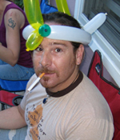

Mike Sinkula grew up in Southern California went on to earn a BA in Visual Communication/Graphic Design, from California State University at Chico in 1993.
Early in 1994 Mike came to Seattle to work in its booming graphic design industry. He went on to work for a few years in the corporate sector of Seattle for such companies as Nintendo of America and Sierra On-line designing and producing artwork for “Nintendo Power” and “Interaction” Magazine.
In 1997 Mike founded Premium Design Works to get away from the corporate industry and to find a path that suited his ideology. This allowed Mike to create logos for small business, design and produce advertising work for non-profit organizations and create collateral for musicians and recording companies.
To compete in the new information-age industry, Mike found himself learning web design and development along the way as he designed websites for local software and net-casting companies in the late 1990s. In order to learn even more about the web design industry, Mike put Premium Design Works on hold in the year 2000 to take a position as a User Interface designer with Drugstore.com.
By late 2001 Mike was offered a web design instructor position at Seattle Central Community College. He has found that teaching college level design and development courses has been a fulfilling asset to his life and that it has enabled him to keep his finger on the pulse of the web design and development industry.